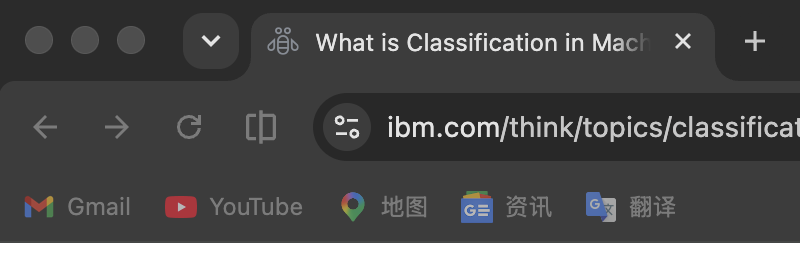
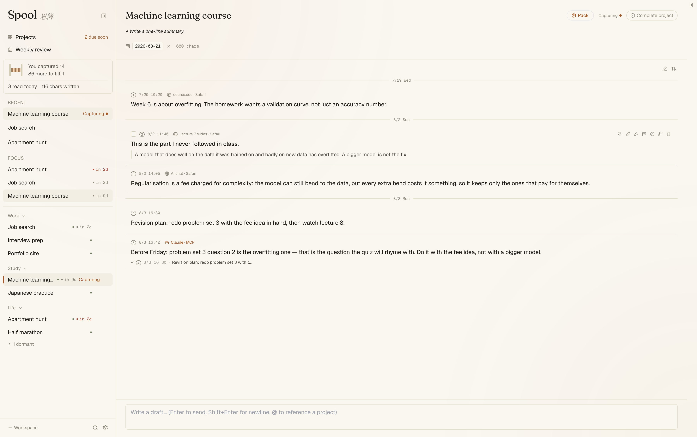
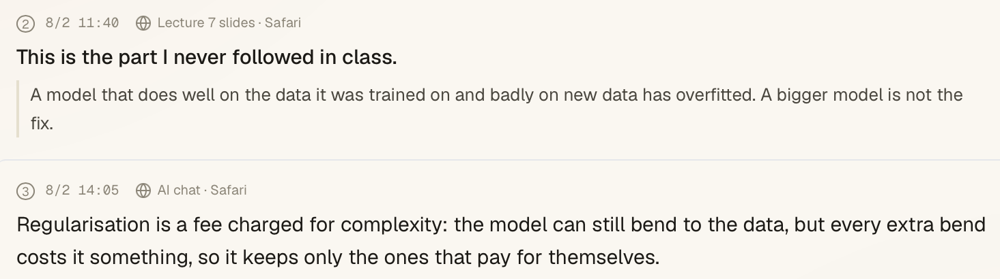
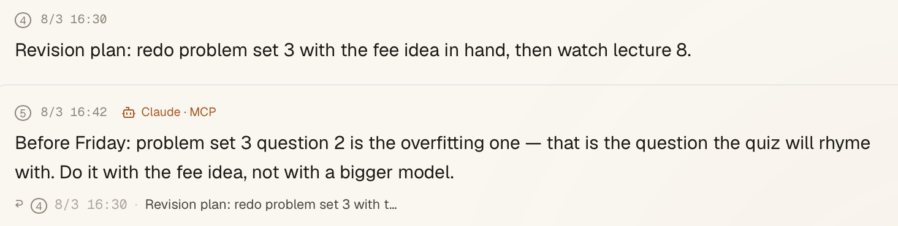

来源始终保留
#2 [11:40 · Lecture 7 slides · Safari] A model that does well on training data and badly on new data has overfitted.
复制值得保留的内容，再连按两下 ⌥。内容会存入当前项目，你还可以附上当时的想法。几周后，一次打包就能把完整背景交给任何 AI；交出去的每个字，你都可以先看清楚。
周一，你打开新对话，从头说明项目是什么、为谁而做、已经定下什么、哪些方案试过又放弃。周三换一个对话，又得再说一遍；这次写得更短，偏偏漏掉了最重要的部分。使用 Spool，这些背景会在工作过程中逐条保存。一次点击、一次粘贴，AI 就能从你当前的进度继续。
已经排除的 bug、选用某个库的理由、第二周就放弃的方案。新对话不再把你带回已经走过的弯路。
课堂上没听懂的一句话、以后要引用的论文、终于讲清某个概念的解释。复习时，AI 可以基于你自己的材料提问，而不是泛泛引用网络内容。
不同应用、不同窗口，每个新对话都不了解你的背景。Spool 保存它们缺少的项目上下文，同一份 Pack 可以交给任何一个。
存下一条笔记并打包，再看一个全新的 AI 对话如何只凭这份背景接上进度。最后，AI 会提议把新的内容写回项目，由你决定是否保留。演示内容已预先编写，交互流程与真实应用一致。
复制任意内容，再连按两下 ⌥。内容会直接进入当前项目，来源也会一并保存，浏览器内容还会记录标签页标题。确认浮窗出现时，光标已在批注框中：可以写下保存它的原因并按 Enter，也可以点击别处跳过。你的批注比摘录更能说明当时的判断，AI 也会优先读取。



保存的内容按时间顺序进入同一个项目。结构只有两层：工作区和项目。无需建立文件夹，也无需选择标签。下次回来时，最新几条笔记就能说明上次停在哪里。
项目不只保存文字。拖入的文件会留在项目中；笔记里的日期会在临近时显示在项目顶部；不再成立的内容可以标记为作废，也可以在下方补充更正。旧笔记仍保留在原位，并明确显示发生了什么。任何内容都不会覆盖你写过的原文。



Spool 会把项目整理成纯文本 Pack：你的原话优先呈现，摘录保留来源，AI 写入的内容明确署名，便于核对。你可以把它粘贴给任何 AI，也可以自己阅读以恢复工作状态。Pack 在本机按固定规则生成并放入剪贴板，不会自动发送到任何地方，内容也可重复核对。
这不是 AI 生成的摘要，而是项目里的笔记原文：按时间排列，每条都保留来源。下面是 Spool 真实生成的一份 Pack，只有明确标出的部分被省略。
#2 [11:40 · Lecture 7 slides · Safari] A model that does well on training data and badly on new data has overfitted.
#4 [16:30] Revision plan: redo problem set 3 with the fee idea in hand, then watch lecture 8.
#5 [16:42 · Claude · MCP] Before Friday: problem set 3 question 2 is the overfitting one.
↩ cites #4
# Project Context: Machine learning course Generated by Spool on 2026-08-12. 5 blocks total. ## How to Read This Context The blocks below come from FOUR different authority categories. Treat each category according to the rules in this section. ### 📖 Reference (authoritative) **Handling**: Treat as ground truth. Do not contradict. ### 🧩 Synthesis (already-formed understanding) **Handling**: These are someone else's synthesis. […] Do not treat them as facts. If they contradict Reference, defer to Reference. ### 🔄 Process (conversation traces — read for evolution, not facts) **Handling**: The literal content of these blocks is NOT a reliable source of facts. What IS reliable is the user's evolving questions. ### 💭 Personal (the user's own hypotheses and notes) **Handling**: Read these to understand where the user currently stands. If they contain factual errors, point them out directly — do not protect the user's feelings at the cost of correctness. [… the reading rules and the notation key run for 4,192 more characters …] ## Full Record (chronological) #1 [2026-07-29 10:20 · from course.edu · Safari] Week 6 is about overfitting. The homework wants a validation curve, not just an accuracy number. #2 [2026-08-02 11:40 · from Lecture 7 slides · Safari] A model that does well on the data it was trained on and badly on new data has overfitted. A bigger model is not the fix. note: This is the part I never followed in class. #3 [2026-08-02 14:05 · from AI chat · Safari] Regularisation is a fee charged for complexity: the model can still bend to the data, but every extra bend costs it something, so it keeps only the ones that pay for themselves. #4 [2026-08-03 16:30] Revision plan: redo problem set 3 with the fee idea in hand, then watch lecture 8. #5 [2026-08-03 16:42 · from Claude · MCP] Before Friday: problem set 3 question 2 is the overfitting one — that is the question the quiz will rhyme with. Do it with the fee idea, not with a bigger model. ↩ cites: [2026-08-03 16:30] Revision plan: redo problem set 3 with t…
上方截图和 Pack 示例均来自专门制作的演示资料库，不含任何个人内容。
第一天，三条笔记和一次粘贴就能省去重写背景。六周后，同一个项目还保存着你已经忘记的决定、很难再次找到的链接，以及当初否定某个方案的理由。交接仍然只需一次点击；使用方式没有变化，只是项目背景越来越完整。
Spool 会自动统计保存数量。侧栏中的线轴会随笔记增加而逐渐绕满；每满一百条，就开始下一个线轴。
两种方式都能让 AI 获得项目背景。第一种可以立即在任意浏览器标签页使用；第二种只需配置一次，之后无需再复制粘贴。
一次点击、一次粘贴，任何 AI、任何对话都能使用。这已经是完整的 Spool；即使不连接任何 AI 应用，也不会少用产品本身的功能。
需要你手动完成复制和粘贴。
获得你的许可后，已经在使用的 AI 应用可以读取 Spool：查看数周的项目记录、跨项目搜索，并把有明确署名的新内容写回项目。你无需再复制，只要直接提问。
在 Spool 设置中开启服务，并重启对应的 AI 应用以加载配置。
仍然在熟悉的聊天框中提问。若使用 ChatGPT 桌面端，需要进入 Codex 对话；普通 ChatGPT 对话运行在远端，无法访问这台 Mac 上的本地 MCP 服务。
在编辑器的 AI 面板或终端中提问。
无论使用哪类客户端，你都留在原来的应用里，由 Spool 提供项目笔记。对于上面六个客户端，Spool 可以通过一个按钮写入 MCP 配置；重启客户端后，它才能加载新配置。Spool 会另行显示客户端是否实际连接。名单之外的客户端，可以复制 Spool 提供的配置并手动粘贴。连接后的使用说明只保留在设置按钮旁：一小段既可自己阅读，也可直接发给 AI 的文字。
已连接的 AI 可以向项目新增内容。每条内容都会标明由哪个 AI 写入，并追加在你的笔记之后，不会覆盖原文。AI 无法编辑或删除你写下的内容。
提议更正旧笔记中的一句话、把一段内容拆分到多个项目，或申请读取你添加的某个文件，都不会立即执行。它们会进入待审队列，由你批准或丢弃。
如果旧笔记中的某句话已不再成立，AI 可以指出它被哪条新内容更正。旧笔记仍完整保留，其他未被更正的内容继续有效。
用几句明确的话写下项目正在等待什么，例如尚未公布的决定、可能更新的页面，或需要定期复查的数字。Spool 会把这些跟进目标原样交给你已安装的命令行 AI；查询结果仍会进入待审队列。没有新进展时，“跟进”不会产生内容。另一个独立功能“周回顾”可以检查所有项目，但不会获得网页搜索工具，结果保存在专门的回顾页面。
“跟进”是唯一会获得网页搜索工具的 Spool 动作，并且只会按照你写下的目标搜索。“周回顾”和起草跟进目标没有网页搜索工具，但仍会把所需的项目背景交给 CLI 服务商。捕捉、整理、搜索和打包全部留在本机，可离线使用。引擎默认关闭，也可在原处随时关闭。
Spool 使用输入监控来识别系统范围内的“连按两下 ⌥”。辅助功能是可选权限，管两件事：在 Spool 完成捕捉后移除第二次按键事件，避免其他使用相同手势的应用同时打开；以及让确认浮窗拿到键盘，你不用先点一下就能直接写批注。
首次从浏览器捕捉时，macOS 还会请求浏览器自动化权限。获准后，Spool 可以把当前标签页标题记录为来源；否则只记录浏览器名称。
拒绝输入监控后，连按两下 ⌥ 不可用，但自定义捕捉快捷键仍可使用。拒绝辅助功能后，捕捉照常工作，只是相同手势可能同时触发其他应用，而且要先点一下批注框才能打字。拒绝浏览器自动化后，捕捉仍然有效，来源会退回浏览器名称。无论如何选择，Spool 都不会自行向外发送内容。
Spool 没有分析统计、遥测或崩溃上报，而且自身不能发起网络请求。内容只有在你主动交给其他程序时才可能离开这台 Mac：把 Pack 粘贴到某个服务、允许 MCP 客户端读取，或运行命令行 AI 的起草跟进目标、“跟进”和“周回顾”。后续如何处理由接收内容的程序决定。剪贴板只在触发捕捉时读取一次，不会在后台持续监控。
所有工作区、项目、笔记和批注都保存在本机的 spool.db 文件中。你可以复制、备份或删除它。无需注册账号，也无需把数据托管在开发者的服务器上。
安装包使用 Apple Developer ID 签名并通过 Apple 公证，因此 macOS 可以验证开发者。当前只提供 Apple 芯片版本；Intel Mac 虽可下载安装包，但无法运行。Spool 尚无自动更新功能，也不会联网检查新版。
Spool 没有公司或融资支持。开发过程中的关键决定、数据丢失事故，以及为防止再次发生而增加的保护措施，都记录在公开的开发故事中。公开的是开发记录；源代码目前并未开放。
目前不可以。现有安装包只支持 Apple 芯片（arm64）。Intel Mac 可以下载安装包，但无法运行，也没有单独的 Intel 版本。
不必。即使从不连接 AI，Spool 的功能也不会被限制。你仍可把项目打包成纯文本，再粘贴给浏览器中的任意 AI。
目前不支持。Spool 是 Mac 应用，捕捉快捷键依赖 macOS 特有的系统接口。
不可以。AI 可以向项目新增带有明确署名的笔记。如果它提议更正旧笔记中的某句话，该提议必须先进入待审队列。只有你能把笔记标记为作废或删除笔记；AI 写入的内容也不会显示成用户原文。
Spool 不需要 API key，也没有填写 key 的位置。AI 客户端读取项目时，使用的是你在该客户端已有的账号与额度；命令行 AI 执行“跟进”等动作时，也使用对应 CLI 已登录账号的额度。
Spool 背后没有服务器、账号体系或公司，几乎没有需要收费覆盖的成本。它由一名开发者维护，所有主要功能都运行在你的电脑上。
笔记仍保存在 Mac 上的 spool.db 文件中。这是标准 SQLite 文件，可由多种工具打开；即使 Spool 不再更新，数据也不会随之消失。
有。把整个项目打包成可阅读的纯文本，本身就能帮助你在中断一段时间后恢复上下文；AI 只是另一种读取和使用这些背景的方式。
目前需要手动下载新的 dmg 并替换应用，尚无自动更新渠道。Spool 也不会在后台联网检查新版。
不会。Spool 只在你触发捕捉快捷键的那一刻读取一次剪贴板，不会轮询，也不会保存你复制过哪些内容的历史。
不需要。结构只有工作区和项目两层，也没有文件夹或标签。捕捉的内容会进入你标记为当前工作的项目。
Spool 标志：从上方看到的线轴，一根线从中向外延伸。
免费、可离线使用、无需账号。
下载 macOS 版Apple 芯片 Mac（arm64）· 已由 Apple 签名并公证 · 无需账号 · 不追踪使用情况 · 在 GitHub 查看全部版本